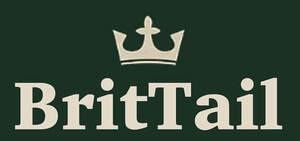

Trade Mark Journal No.2025/030 25 July 2025
UK00004235452 17 July 2025 (8,20,21,28,31,35)

- Class 8
- Cutlery; Silverware [cutlery, forks and spoons]; Forks [cutlery]; Knives being tableware; Canteens of cutlery; Table cutlery [knives, forks and spoons]; Tableware [knives, forks and spoons]; Biodegradable cutlery; Hand-operated cutlery; Spoons being tableware; Disposable tableware [cutlery] made of plastics; Forks being tableware; Spreaders [cutlery]; Spreaders being cutlery; Cutlery, kitchen knives, and cutting implements for kitchen use; Table knives, forks and spoons of plastic; Boxes for cutlery [fitted]; Silver plate [knives, forks and spoons]; Knives, forks and spoons; Canteens of cutlery made of precious metal; Plastic spoons, table forks and table knives; Kitchen knives; Boxes adapted for cutlery; Cutlery of precious metal for cutting; Cutlery for use by children; Cutlery of precious metals; Table knives, forks and spoons for babies; Kitchen knives (Non-electric -); Baby spoons, table forks and table knives; Cutlery for use by babies; Knives; Ceramic knives; Stainless steel table knives; Table knives; Stainless steel table spoons; Biodegradable knives; Thin-bladed kitchen knives; Household knives; Japanese chopping kitchen knives; Disposable knives; Chef knives; Sterling silver table knives; Forks and spoons; Folding knives; Spoons; Disposable spoons; Fish slicing kitchen knives; Stainless steel table forks; Vegetable knives; Razor knives; Fruit knives; Kitchen mandolines.
- Class 20
- Furniture for house, office and garden; Kitchen furniture; Furniture and furnishings; Bedroom furniture; Bathroom furniture; Make-up mirrors for the home; Nursery furniture; Living room furniture; Antique style furniture; Garden furniture; Furniture for kitchens; School furniture; Furniture (School -); Furniture for bathrooms; Patio furniture; Bathroom fittings in the nature of furniture; Shelves being nursery furniture; Furniture for use in rest rooms; Office furniture; Furniture (Office -); Modular bathroom furniture; Kitchen dressers [furniture]; Stationery cabinets [furniture]; Furniture; Outdoor furniture; Shop furniture; Indoor furniture; Metal furniture and furniture for camping; Security cabinets [furniture]; Fitted kitchen furniture; Furniture for camping; Camping furniture; Furniture for motor homes; Fitted bedroom furniture; Bathroom vanities [furniture]; Furniture cabinets; Cabinets [furniture]; Computer cabinets [furniture]; Garden furniture made of metal; Household furniture; Wall decorations of wood; Wall shelves furniture; Garden furniture manufactured from wood; Door furniture made of stoneware; Lawn furniture.
- Class 21
- Food containers for pet animals; Pet feeding dishes; Household containers for storing pet food; Dog food scoops; Pet feeding bowls; Containers for bird food; Litter trays for pet animals; Pet feeding and drinking bowls; Pet drinking bowls; Plastic containers for dispensing food to pets; Litter scoops for use with pet animals; Brushes for grooming pet animals; Electronic pet feeders.
- Class 28
- Pet toys; Toys for pet animals; Toys for pets; Toys and playthings for pet animals; Dog toys; Toys, games and playthings for pet animals; Toys and playthings for pets; Pet toys containing catnip; Toys for cats; Toys for domestic pets; Toys for dogs; Whack-a-mole toys for pets; Toys; Toy dogs; Pet toys made of rope; Toys for animals; Cuddly toys; Toy animals; Snuffle mats being dog toys; Stuffed animals [toys]; Plush toys; Infant toys; Toys for babies; Toy food; Stuffed toy animals; Stuffed toys; Bath toys; Toy furniture; Toys for birds; Imitation bones being toys for dogs; Toys, games, and playthings; Inflatable toys; Chewing toys for parrots; Ride-on toys; Outdoor toys; Toys for translating feelings of pets; Toy figurines; Inflatable bath toys; Plastic toys for use in the bath; Play mats for use with toy vehicles [playthings]; Bathtub toys; Plastic toys; Miniature car models [toys or playthings]; Crib toys; Radio-controlled toys; Stuffed and plush toys; Toy dolls; Stuffed plush toys; Plush stuffed toys; Model cars [toys or playthings]; Fidget toys; Toys for infants; Fluffy toys; Toy strollers; Toy birds; Play mats incorporating infant toys [playthings]; Noisemakers [toys]; Toys for use in perambulators; Wind-up toys; Plastic character toys; Toy playsets; Cloth toys; Smart plush toys; Puzzles [toys]; Inflatable ride-on toys; Toy plants; Stuffed bean-filled toys; Electronic toys; Toys for sandpits; Water toys; Mobiles [toys]; Toy fish; Sandbox toys; Toy cars; Educational toys; Soft toys in the form of animals; Toy prams; Rubber character toys; Toy jewellery; Sand toys; Rattles [toys].
- Class 31
- Pet food; Food (Pet -); Pet food for dogs; Pet rabbit food; Pet food for birds; Dog food; Pet foods; Cat food; Pet foodstuffs; Animal food; Food for dogs; Food for cats; Pet beverages; Food for animals; Foodstuffs for pet animals; Hamster food; Food for goldfish; Rabbit food; Dog foods; Food for hamsters; Pet animals; Bird food; Stall food for animals; Food for racing dogs; Pet foods in the form of chews; Edible pet treats; Food preparations for dogs; Food preparations for cats; Edible food for animals for chewing; Food for rodents; Fish food; Food for fish; Food products for animals; Food for birds; Oat-based food for animals; Cattle food; Pet birds; Food for aquarium fish; Beverages for pets; Edible silvervine powder for pet cats; Foods flavoured with chicken for feeding cats; Foods flavoured with chicken for feeding dogs; Fish meal for animal consumption; Fish meal [animal feed]; Foods containing chicken for feeding dogs; Canned foods for dogs; Foodstuff for dogs; Wheat proteins for animal food; Foods flavoured with beef for feeding dogs; Foods flavoured with beef for feeding cats; Foods containing chicken for feeding cats; Animal beverages.
- Class 35
- School fee accounting services; Retail services relating to home textiles.
CORPWIN UK LTD